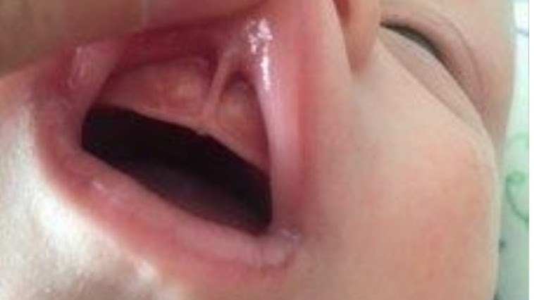
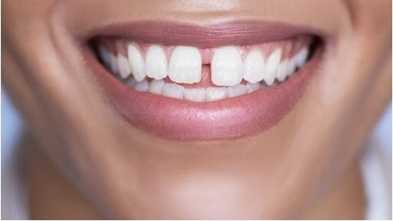

Un frein de lèvre supérieur trop court empêche le bon positionnement de la lèvre sur le mamelon, entraînant un manque d'étanchéité. Il empêche la lèvre de se retrousser sur le mamelon.
Pour compenser, l'enfant pince pour tenter de maintenir une étanchéité. Il en résulte généralement des douleurs pouvant aller jusqu'à la formation de crevasses.
Malgré les efforts cela n'est pas suffisamment étanche et l'enfant avale beaucoup d'air ce qui provoque de nombreux renvoi et parfois même des coliques.
Cette situation agace et fatigue l'enfant. Il se détache plus facilement et rapidement du sein.
Un ou plusieurs symptômes peuvent être présents.
crédit photo CMDP
Impact fréquent :

crédit photo CMDP